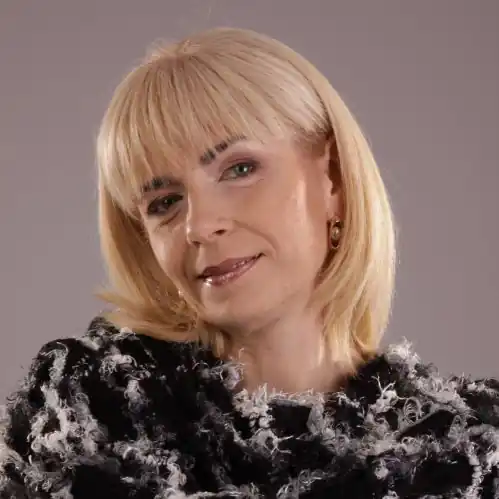

Народилася 26 серпня 1969 р. у м. Києві в родині педагога, грінченкознавця Антоніни Іванівни Мовчун і філолога, байкаря Віктора Максимовича Мовчуна.
Дитинство минало в Києві, а світ народного слова майбутня письменниця відкрила завдяки щорічним відвідинам мальовничого села Вербка на Вінниччині. Писати вірші почала ще в дошкільному віці. У 1987 р. закінчила Київську середню школу № 212 і вступила на філологічний факультет Київського державного педагогічного інституту ім. О. М. Горького, а в 1992 р. закінчила Київський державний педагогічний інститут ім. М. П. Драгоманова, отримавши диплом із відзнакою (за спеціальністю "Учитель української мови та літератури").
Дебютувала в 1991 добіркою віршів "Вклонись, людино, знов воскреслій правді" в журналі "Українська мова та література в школі" (№ 5). Пише для дітей (прозу, поезію, драматургію), а також лірику. Творчість для дітей відзначається жанровим і тематичним розмаїттям: оповідання, казки, повісті, п'єси, вірші. Авторка звертається до форм скоромовок і безконечників, охоче використовує гру слів і звуків. У легкій, а подекуди вибагливій формі ці твори виховують мовне чуття читачів. Парадоксальні сюжети розвивають фантазію та змушують замислитися над одвічними проблемами добра і зла. Авторка численних публікацій у журналах для дітей "Малятко", "Барвінок", "Соняшник", "Перець", "Пізнайко", "Стежка", "Однокласник", "Крилаті", "Джміль", "Мамине сонечко", "Пригоди" та ін., в альманахах, антологіях і збірках "Боян" (1993), "Самоцвіти" (1996), "Радосинь" (2004, 2012, 2015), "Сонячна Мальвія" (2005, 2007), "Смійся та грай — світ пізнавай" (2000), "Слово до слова — весела розмова" (2002), "Пори року" (2003), "Сонечкові діти" (2003), "А що в мішку?" (2006), "Скринька-веселинка" (2007), "З нами весело усім" (2007), "Для малят про звірят" (2007), "Хмарки грають у квача" (2008), "Добра наука" (2012), "Язик до Києва доведе, або Цікаві ролі театру в школі" (2013) та ін. Твори можна знайти в підручниках та хрестоматіях для школи.